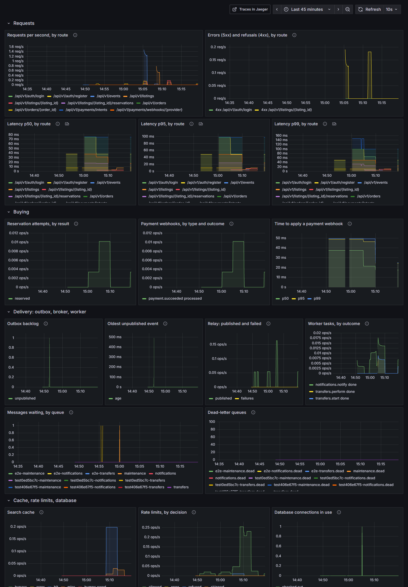
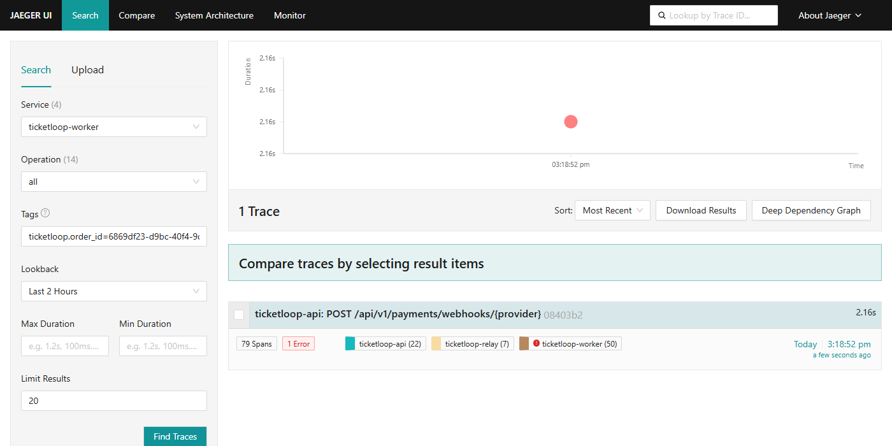
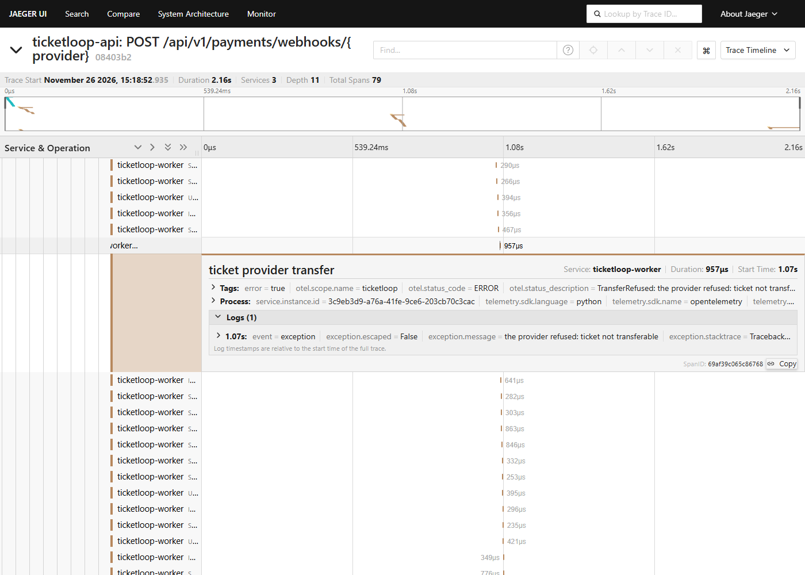

The 30-second answer
Metrics first. Prometheus counters and histograms where things happen: every request by its route template, reservations by result, payment webhooks by type and outcome, worker tasks by how they ended, the outbox backlog. Every label takes its value from a short fixed list, so a forged webhook or a made-up path can't create new series. A Grafana dashboard, provisioned from files in the repository, shows requests, errors and p50, p95 and p99 per route next to the purchase flow and the queues.
Then traces, with OpenTelemetry. The API, the SQL statements, the relay and the Celery worker each make spans, and they join into one trace per purchase. The hard part is the outbox: the request commits and returns before its event is even published, so nothing ties the two together. I store the request's trace context in the outbox row, in the same INSERT as the event. The relay publishes inside a span that continues it, and Celery carries it in the message to the worker.
Last, logs and delivery. Every log line written inside a span carries the trace id as correlation_id, and a worker's lines name the event's order. That is the whole walk: order id to log line, log line to trace, trace to the red span. CI gained two jobs: one builds the image, migrates with it and starts it with production settings as uid 10001 until its health check answers; the other runs Bandit, pip-audit and npm audit and fails on what they find.
What I built
- The metricsCounters and histograms in prometheus-client's registry, and
/metricsfrom prometheus-fastapi-instrumentator: request counts and latency per route template, status grouped as 2xx, 4xx, 5xx, and a path that matches no route counted asnone.app/core/metrics.pyapp/main.py - Counted where it happensThe reserve route counts
reserved,already_yoursor the refusal's problem code; the webhook counts its type and outcome and times itself; the relay counts what it published and what the broker refused; each consumer task countsdone,retryorrejected.app/modules/reservations/router.pyapp/modules/payments/router.pyapp/modules/outbox/relay.pyapp/workers/tasks.py - Read when Prometheus asksThe outbox backlog and the age of its oldest event (one indexed query with a 1-second limit, on a connection of its own so a busy pool never holds a scrape up, left out when Postgres is down), connections checked out of the pool, and M10's cache and rate-limit counts.
app/core/metrics.py - The worker's numbersCelery's pool processes each write their counters to files in
PROMETHEUS_MULTIPROC_DIR; the main process serves the sum on port 9100, and empties the folder when it starts. The relay serves its own on 9101.app/workers/celery_app.pyapp/workers/relay.py - Tracing
configure_tracing()sets up OTLP export in batches, only withTRACING_ENABLED=true. The FastAPI instrumentation makes a server span per request; my own listener on SQLAlchemy's cursor events makes a span per statement run inside a trace.app/core/telemetry.py - The trace through the outbox
emit()storescurrent_context_headers()in the row. The relay publishes each event insidecontinued(row.headers, ...); empty or broken headers start a new trace, never an error. Celery's instrumentation takes it from there, in the relay and in each pool process.app/modules/outbox/service.pyapp/modules/outbox/relay.pyapp/workers/celery_app.py - Calls to other systemsEach fakepay call is a client span named by its route, never by the id in its path, and sends
traceparent. The ticket provider call is a client span too; a refusal, an unknown outcome or a busy answer is recorded on it as the error.app/infrastructure/payments/fakepay.pyapp/modules/transfers/service.py - Logs that name the trace and the orderA structlog processor adds the current trace id as
correlation_id. Celery'stask_prerunbinds the event's ids (event_id,order_id,transfer_idand the rest) andtask_postrununbinds them, so even Celery's own "Task succeeded" line names the order.app/core/logging.pyapp/workers/tasks.py - Prometheus, Grafana, JaegerThree pinned images in Compose. Prometheus scrapes the API, the worker, the relay and RabbitMQ's per-queue metrics; Grafana opens on the dashboard; Jaeger keeps traces in memory. Nothing in the shop waits for any of them.
docker-compose.ymlobservability/ - Delivery in CIAn
imagejob (build, migrate, start with production settings and generated secrets, health 200, uid 10001) and asecurityjob (Bandit at high severity, pip-audit on the locked runtime packages,npm audit --audit-level=high)..github/workflows/ci.yml
One failed purchase, from its order id to the failing step
The provider set to refuse (TICKET_PROVIDER_MODE=permanent), one ticket bought through the API and fakepay's checkout, and then the walk someone on call would take.
- 1The buyer pays
fakepay posts the webhook. The API's server span starts a new trace, since fakepay sends no
traceparent. The handler settles the payment, andemit()writespayment.succeededwith{"traceparent": "00-08403b20…-…-01"}in its headers, in the same transaction. - 2The relay publishes it
A moment later (34 ms this time; at most a second, the relay's pause between passes), in another process, the relay claims the row and opens
outbox publish payment.succeededfrom those headers: a child of the webhook's span. It sends two tasks, start the transfer and notify the buyer, and Celery's instrumentation writes the context into each message. - 3The worker starts the transfer
run/transfers.startcontinues the trace from the message. Its ownemit(),transfer.initiated, stores the same trace, so the next publish andrun/transfers.performare in it too. - 4The provider refuses
The
ticket provider transferspan recordsTransferRefusedand is marked as the error. The transfer and the order go to review, and the worker logstransfer.needs_reviewat error level, with the order id and the trace id. - 5Finding it
docker compose logs worker | grep <order id>gives five lines, all with the samecorrelation_id, one of them the error with its reason. Opened in Jaeger: 79 spans from three services, one error, the provider call. Jaeger also finds it from the order alone: tagticketloop.order_id.
# the worker's error line, one JSON object per line
{"transfer_id": "645a50f0…", "reason": "refused: the provider refused: ticket not transferable",
"event": "transfer.needs_review", "order_id": "6869df23-d9bc-40f4-9d9d-78cc0359155b",
"correlation_id": "08403b20745a7b0161d8edac5d403d85", "level": "error", ...}
# app/modules/outbox/relay.py: each event published in the trace it was emitted in
with continued(event.headers, f"outbox publish {event.event_type}", attributes):
for consumer in CONSUMERS.get(event.event_type, ()):
publisher.publish(consumer, message(event))Why the trace goes into the outbox row
Without it, the trace would end at the webhook's response. The relay runs on its own schedule, in its own process, and starts from a row in a table: it has no idea which request wrote it. The row is the only thing the two share, so the context has to travel in it. Writing it in the same INSERT as the event means it exists exactly when the event does, which is the outbox's whole point. And Celery's instrumentation already knows how to carry a context through a message. All the relay has to do is publish inside a span with the right parent.
The trade-off: labels from fixed lists
A metric label is forever: every distinct value is a new time series that Prometheus stores and searches. A route's real path has ids in it, a listing per series, without end; a webhook's event type is whatever the sender wrote. So labels only take values from short lists in the code: the route template, the known problem codes or other, the known event types or unknown. What that costs: /metrics can't say which listing was slow. That's what traces are for. A span is one request's story, so ids go there, as attributes Jaeger can search.
Measured, on the Docker stack
All four Prometheus targets up: the API, the worker, the relay, RabbitMQ. The failed purchase above took 2.16 seconds from the webhook to the last notification, most of it the relay's one-second pause between passes, twice; the webhook itself took 23 ms. The worker's counters added up across its two pool processes, and after docker compose restart worker they started from nothing. With Jaeger stopped, requests took the same 6 to 30 ms as before; the only sign was one line per lost batch, Failed to export spans batch, written by the exporter's background thread. And the image, started with ENVIRONMENT=production and generated secrets, answered its health check as uid 10001.
Screens
The app has no new screens. The new screens are the tools that watch it: Grafana's dashboard, and Jaeger with the failed purchase from above.



Decisions
Metrics
Route templates as labels
Instead of the path asked for
A path has ids in it, so one series per listing, without end. The template is one per route, and a path no route matches counts as none.
A fixed list for every label
Instead of the value as it arrived
A forged webhook can send any event type; counted as sent, each would add a series. Anything not on the list is unknown or other.
Backlog read by the API when scraped
Instead of counted by the relay
Any number of relays may run and none sees the whole table. One indexed count with a 1-second limit answers for all of them, on a connection of its own, and with Postgres down the gauge is left out while /metrics still answers.
Files for the worker's processes
Instead of a port per pool process
Pool processes come and go. They write to files, the main process serves their sum on one port, and it empties the folder when it starts so a restart doesn't count the dead.
Retries as an outcome
Instead of a separate counter
worker_tasks_total{task, outcome} with done, retry, rejected: one query gives the share of deliveries that needed another go.
Traces
The trace stored in the outbox row
Instead of a new trace per message
A new trace per message would leave the webhook, each task and the provider call as separate stories, to be matched up by hand. One trace answers "what happened to this purchase" in one page.
Celery's instrumentation for the queue
Instead of my own message headers
It already writes the context into the message and continues it in the worker. My part was giving it the right parent span.
My own SQL spans
Instead of OpenTelemetry's SQLAlchemy instrumentation
It supports SQLAlchemy below 2.1, and on 2.1 it fails while starting. A few dozen lines on SQLAlchemy's cursor events give a span per statement inside a trace, with placeholders, never values; a failed one carries its error's class and SQLSTATE, not Postgres's message, which can quote the row.
A hand-written span for fakepay
Instead of the httpx instrumentation
The client is httpx2, which that instrumentation doesn't patch. Mine is named by the route template, and the request carries traceparent.
Ids on spans, never on metrics
Instead of the same labels on both
An order id on a span lets Jaeger search by it. On a metric it would be a new series per order.
Off unless switched on
Instead of always on
Off, there is no exporter and every span is a no-op. On, spans leave in batches from a background thread, so a slow or missing Jaeger costs a request nothing.
Delivery
Start the image with production settings
Instead of with the local defaults
Production refuses the built-in secrets, so starting it with generated ones is the start a deployment makes, and a setting it can't start without fails here first.
pip-audit on the locked export
Instead of on the virtualenv
uv export --no-dev is exactly what the image installs, pinned and hashed. The test tools never ship.
Fail on high
Instead of on everything
npm reports 8 moderate advisories in the build tools today; failing on them would keep CI red for code that never reaches a browser. pip-audit gives no severities, so any known vulnerability fails.
Interview questions
Answer out loud first, then open.
Metrics, logs, traces: what's each for?
Metrics are numbers over time, cheap to keep and to alert on: how many, how fast, how full. Logs are what one process said happened, with detail. A trace is one request's path across processes, with timings for each step. Metrics tell you something is wrong, a trace shows where, and the logs say why.
How do you follow a request across a message queue?
Put the trace context in the message. The producer injects traceparent (a trace id and the parent span's id) into the message headers, and the consumer extracts it and starts its span as a child. Celery's OpenTelemetry instrumentation does that on send_task and in the worker.
And across the outbox, where nothing is sent at request time?
The request writes the event to a table and returns; the relay publishes it later from another process. So I store the trace context in the outbox row's headers, in the same transaction as the event. The relay starts its publish span from those headers, and from there Celery carries it. An old or broken value just starts a new trace.
What's a correlation id, and where does yours come from?
A value that ties together every log line about one piece of work. Mine is the OpenTelemetry trace id, added to each line by a structlog processor. So the id in the logs is the one Jaeger opens, and it stays the same from the API through the relay into the worker.
What is high cardinality, and why avoid it?
The number of distinct label values. Every combination is a separate time series that Prometheus keeps in memory and on disk. Put a user or order id in a label and the series grow with the traffic until Prometheus struggles. I only use labels from short fixed lists, and put ids on spans instead.
How do you get p95 and p99 per route?
A histogram per route with fixed buckets, 5 ms to 5 s. Then histogram_quantile(0.95, sum by (le, handler) (rate(http_request_duration_seconds_bucket[5m]))). It's an estimate within a bucket, so the buckets have to sit around the latencies you care about.
How does a prefork Celery worker expose metrics?
Each pool process is its own Python process with its own counters, so one HTTP port per process doesn't work. prometheus-client's multiprocess mode has each process write to files in a shared folder, and the main process serves their sum. The folder is emptied when the worker starts, or a restart would add the old processes' counts.
What happens if Jaeger is down?
Nothing a user sees. Spans are exported in batches from a background thread with a 2-second timeout; when the export fails the batch is dropped and one line is logged. I stopped Jaeger and timed requests: the same 6 to 30 ms as before.
What about /metrics when Postgres is down?
It still answers, without the backlog gauge. The backlog is read when Prometheus scrapes, with a 1-second statement limit, and any error just leaves it out. It reads on a connection of its own, so requests holding every connection of the pool don't hold the scrape up either. One test points the app at a database that isn't there, another holds the whole pool, and both check the answer comes back quickly.
What does your CI check before code ships?
Lint, every test against real Postgres, MinIO, RabbitMQ and Redis, the frontend's checks and browser tests, and now the image: built, migrated with itself and started with production settings until its health check answers, running as uid 10001. Plus Bandit at high severity, pip-audit on the exact runtime packages, and npm audit at high.
How would you get paged?
I haven't built alerting; it's the next thing. I'd write Prometheus rules on what users feel: the 5xx rate, p99 over a budget, outbox_oldest_unpublished_seconds over a minute (events stuck), and any message in a dead-letter queue.
Traps and fixes
- The request counter counted nothing. Each test builds a new app, and the instrumentator registers its metrics once per process: the second app got nothing back for the taken names and recorded nothing, silently. The HTTP metrics are made once per process now and shared.
- A negative age for the oldest event.
now()in Postgres is the transaction's start, so a row created a moment later looked like it came from the future. The age usesclock_timestamp(), floored at zero. - The SQLAlchemy instrumentation would have stopped the API starting. It refused SQLAlchemy 2.1.9 with an error at every start, so the first traces had no SQL in them. With its version check skipped it crashed outright, importing the asyncio extension, which needs a package we don't install. With tracing on, the API wouldn't have started. I wrote the span listener myself, with a test for a statement and a failing one.
- The order id was missing from the worker's lines. I bound the ids inside the task, but Celery writes its "Task succeeded" line after the task returns, and a successful transfer logs nothing else. Grepping a good purchase's order id found nothing. They're bound on Celery's
task_prerunnow and unbound ontask_postrun, which comes after that line. - /metrics without Postgres took 3 seconds on Windows. A refused local connection takes about 2 seconds there. The test sets a 2-second connect timeout and allows 4.5, inside Prometheus's scrape timeout, which is the 5-second scrape interval.
- Four things the final review found. A scrape took its connection from the request pool, so a busy pool made it wait 30 seconds and Prometheus dropped the whole scrape at 5; it has a connection of its own now. Every statement outside a trace (the relay's poll each second, each scrape) started a one-span trace of its own, about 120,000 a day; statements are traced only inside a trace now. A failed statement's span carried Postgres's message, which quotes the row: a taken email, sent to Jaeger; it carries the error's class and SQLSTATE now. And a worker started before RabbitMQ (after a reboot, Docker starts everything at once) never served its metrics, because the dead-letter declaration failed first in the same start-up hook; they're separate hooks now. Each has a test that failed first.
- The queue panel showed Celery's own queues. RabbitMQ reports every queue, including Celery's
celeryevandpidboxqueues. The panels match the three queue names, with or without a test prefix.
Known gaps, on purpose
- No alerting. The numbers are there; the rules and someone to page are not.
- Logs are found with
docker compose logs | grep. There's no log store like Loki; at this size, grep on JSON lines works. - Traces live in Jaeger's memory. A restart loses them.
- fakepay isn't traced. A purchase's trace starts at the webhook, not at the checkout page.
- A
--pool soloworker has no spans. Tracing is set up in each prefork pool process, as compose runs it.
Check it still works
docker compose up -d --build
open http://localhost:3000 # Grafana: the dashboard
open http://localhost:9090 # Prometheus: Status, Target health; all four up
open http://localhost:16686 # Jaeger
TICKET_PROVIDER_MODE=permanent docker compose up -d worker # then buy a ticket, and:
docker compose logs --no-log-prefix worker | grep $ORDER | jq -c '{event, reason, correlation_id}'
docker compose up -d worker
uv run pytest tests/integration/test_metrics.py tests/integration/test_tracing.py
uv run pytest tests/unit/test_compose.py tests/unit/test_observability_config.py tests/unit/test_ci.py
REQUIRE_POSTGRES=1 REQUIRE_STORAGE=1 REQUIRE_BROKER=1 REQUIRE_REDIS=1 uv run pytest # 1253 tests, what CI runs
uvx bandit==1.9.4 -r app fakepay --severity-level high
cd frontend && npm test # 160 unit tests
npm run e2e # 21 browser tests
npm audit --audit-level=high
gh run list --workflow ci.yml --limit 3